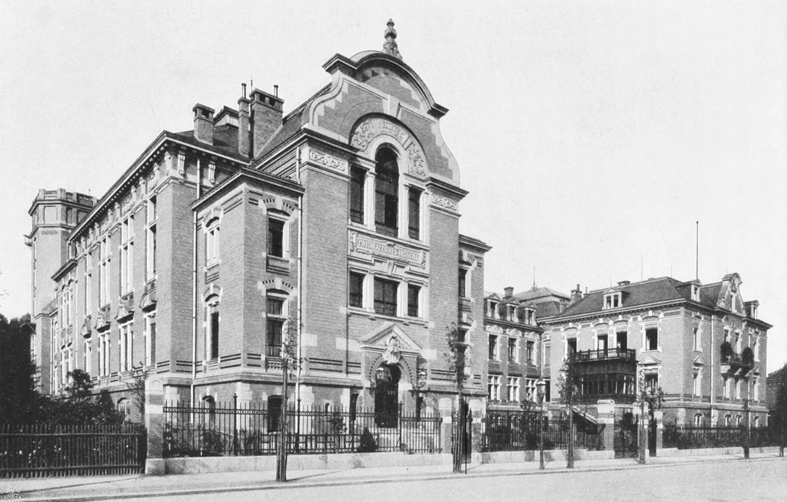
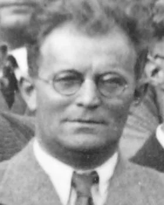
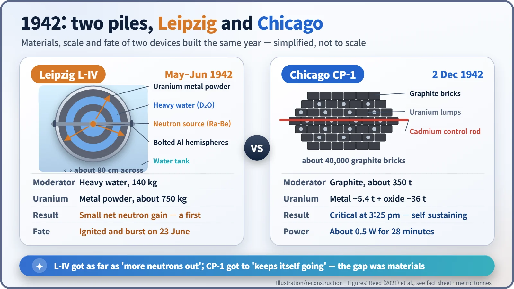
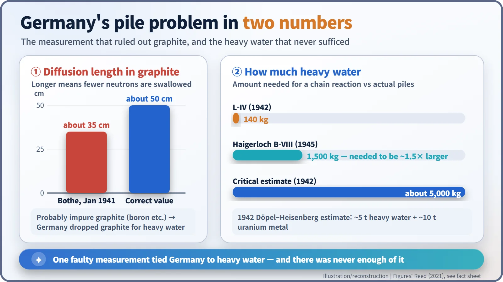
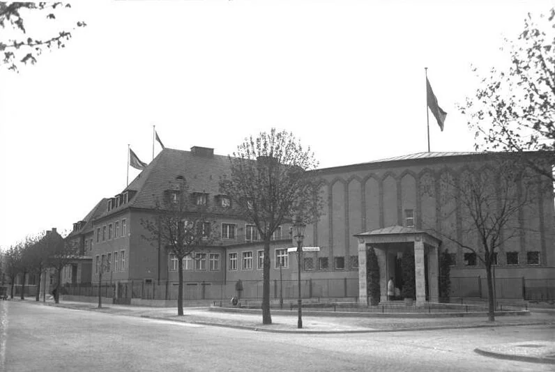

Nuclear History · 093
A Few Bubbles at the Bolts — Heisenberg and Döpel's Leipzig L-IV Reactor Experiment (1942)
A small heavy-water sphere in Leipzig showed the first net neutron gain of the German uranium project, then caught fire when its lid was opened.
In spring 1942, Robert and Klara Döpel and Werner Heisenberg measured the German uranium project's first net neutron multiplication in a small heavy-water sphere called L-IV in Leipzig. On 23 June 1942 the device caught fire and burst when it was opened to check a leak. The accident ended the Leipzig experiments, but the deeper reasons German reactors never went critical lay in a faulty graphite measurement, a chronic shortage of heavy water and a 1942 policy decision.
A few bubbles at the bolts
An aluminium ball about 80 cm across sits in a tank of water. It is made of two hemispheres bolted together, and from the seam a thin stream of small bubbles is rising. This is June 1942, in the Physics Institute of the University of Leipzig, Germany. Inside the ball are uranium metal powder and heavy water. A few weeks earlier, this ball had given German physicists their first genuinely encouraging number. The bubbles were the beginning of its end. [1]

Layers like an onion: the "uranium machine"
Once the war began, Germany's uranium project (often called the Uranium Club) narrowed down to one practical question: could a device fuelled with natural uranium sustain a chain reaction? The Germans called such a device a Uranmaschine, a "uranium machine", what we would call a nuclear reactor. Neutrons released by fission are far too fast to split the next uranium nucleus efficiently, so they first have to be slowed down in a moderator.
In Leipzig the work fell to the experimental physicist Robert Döpel (1895–1982), his wife Klara Döpel (1900–1945), and the theoretical physicist Werner Heisenberg (1901–1976). Klara had trained as a lawyer; a husband-and-wife team at the bench was a rarity in physics at the time. [1]

Their apparatus was built like an onion. Inside an aluminium sphere they stacked alternating shells of uranium and moderator, put a radium–beryllium neutron source at the centre, and lowered the whole thing into a water tank. From late 1940 they built L-I, L-II and L-III in turn, without a clear increase in neutrons. In December 1941 uranium powder caught fire and wrecked one of the spheres. [1]
Spring 1942: the first net gain
The fourth sphere, L-IV, was ready around May 1942. According to a comparative study by the physicist B. Cameron Reed, it held a little over three-quarters of a tonne (roughly 750 kg) of uranium metal powder and 140 kg of heavy water (sources differ somewhat on the exact size). [1]
The result was encouraging. More neutrons were counted at the surface of the sphere than the source at its centre was putting out. Fission in the uranium was adding neutrons. It was the German project's first measured net neutron multiplication, though only a small one. Think of a savings account that has just started to earn a little interest, not one that grows all by itself. The team estimated that the same design scaled up to about 5 tonnes of heavy water and 10 tonnes of uranium metal would sustain a chain reaction. Those figures are a projection: they describe the reactor they hoped to build, not L-IV itself. [3] [5]
23 June: opening the lid
Then the bubbles appeared. After about 20 days of operation, bubbles formed at the gasket. To check whether heavy water was leaking, an institute technician opened the apparatus at Döpel's request, and air got in. Finely divided uranium metal is pyrophoric: it can ignite on its own when it meets air. [4]
On 23 June 1942 the burning uranium reacted with water, producing hydrogen and steam, and the apparatus burst. Burning powder was thrown up to the ceiling, and according to later accounts the fire brigade was called. Heisenberg and Döpel escaped unhurt, but the heavy water and uranium were lost. The Leipzig reactor experiments ended that day. [1] [5]
The event is often called the first reactor accident in history. It is worth being precise: this was not a runaway chain reaction but a chemical fire and explosion caused by reactive metal powder. Afterwards Döpel recommended that future reactors use solid uranium rather than powder.
Why German reactors never went critical
Would things have turned out differently without the fire? The numbers are sobering.

First, the moderator. In January 1941, in Heidelberg, Walther Bothe (1891–1957) measured how far neutrons travel through graphite before being absorbed, the diffusion length. He found about 35 cm; the correct value is about 50 cm. Impurities such as boron, a strong neutron absorber, are the usual suspected cause. On the strength of that measurement Germany abandoned graphite and relied on heavy water. In the United States, by contrast, physicists measured boron contamination in graphite and secured purer supplies; on 2 December 1942 Chicago Pile-1 reached criticality with about 350 tonnes of graphite. [1]
Second, the amount of heavy water. L-IV had 140 kg; a working reactor was expected to need about 5 tonnes. Germany's only large source was the Vemork plant in occupied Norway, and supply was repeatedly cut by Allied attacks. Germany's last reactor, assembled at Haigerloch in 1945, held 1.5 tonnes of heavy water and still fell short: it was later estimated that it would have needed to be about 1.5 times larger. [1] [6]

Third, policy. At a meeting in December 1941, Army Ordnance concluded that decisive results were unlikely during the war and cut its support. On 4 June 1942 (some sources say 6 June), at Harnack House in Berlin, Heisenberg told Armaments Minister Albert Speer and senior officials that, with no method for large-scale uranium enrichment, a bomb was out of reach during the war. The outcome, in essence: continue reactor research, not a bomb. The Leipzig fire came less than three weeks later. [1] [2] [3]

Whether Heisenberg deliberately held back remains a matter of debate among historians. But on materials and organisation alone, many researchers agree that Germany in 1942 was in no position to catch up with Chicago. [2]
What became of them
In the second half of 1942 Heisenberg took charge of the Kaiser Wilhelm Institute for Physics in Berlin; the Döpels withdrew from uranium research. Klara Döpel was buried in rubble at the Leipzig institute during an air raid in April 1945 and did not survive. In July 1945 Robert Döpel was taken to the Soviet Union; he later returned to East Germany and died in Ilmenau. Two reactors built in the same year, toward the same goal, ended very differently: one in bubbles and flames, the other with a quiet needle on a meter. [5]